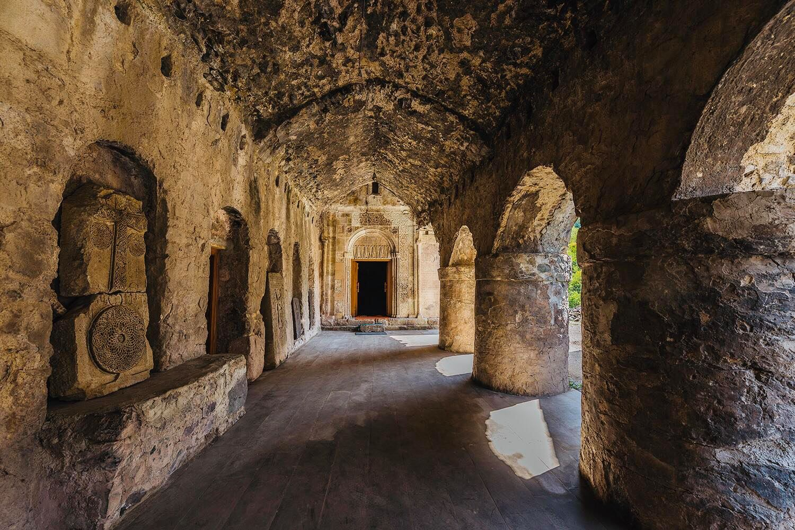

Հակոբավանք հայկական վանական համալիր, որը գտնվում է Մեծ Հայքի Արցախ նահանգի Մեծ Առանք (հետագայում կոչվել է նաև Ներքին Խաչեն) գավառում: Ներկայումս Արցախի Հանրապետության Մարտակերտի շրջանի, Քոլատակ գյուղից 1,5 կմ հյուսիս ընկած մի անտառոտ լեռնաբազուկի վրա: Պատմական գրականության մեջ հայտնի է նաև Մեծառանից վանք անունով: Վանքի հիմանդրման և առաջին շենքերի կառուցման ժամանակը հայտի չէ: Արձանագրություններից ամենհինը փորագրված է մի խաչքարի պատվանդանի վրա, որը հետագայում տեղադրվել է եկեղեցու պատի մեջ որպես շինքար և վերաբերում է 853 ( ՅԲ ) թվականին: Մյուս գրավոր տեղեկությունը գտնվում է Երևանի Մաշտոցի անվան Մատենադարանի մի հիշատակարանում: Այստեղ մագաղաթում գրված է այն մասին, որ Սուրբ Հակոբա վանքի եկեղեցու կառուցողները եղել են Հասան-Ջալալի ծնողները՝ Վախտանգն ու Խորիշահը: ակոբավանքը Խոխանաբերդի ճյուղի հոգևոր կենտրոններից է եղել: Այստեղ «վերստին շինեցի» արտահայտությունը օգտագործված է վերակառուցման, նորոգման իմաստով: Գավթի սրահն աչքի է ընկնում բազմաթիվ խաչքարերի, ավելի քան երկու մետր մեծությամբ գերեզմանաքարերի ու վիմագիր սալաքարերի օգտագործմամբ: Այստեղի խաչքարերը վարդագույն են, տապանաքարերը՝ մոխրագույն պատերը՝ կապտավուն, վիմագիր սալերը՝ կաթնագույն, իսկ արևի ժամացույցը քանդակված է բաց նարնջագույն քարի վրա:
